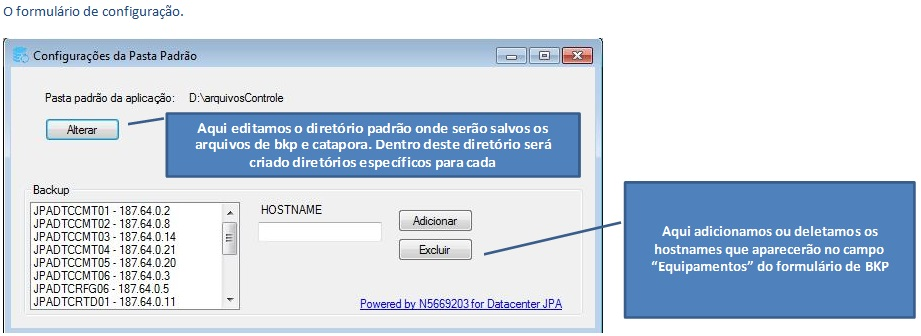
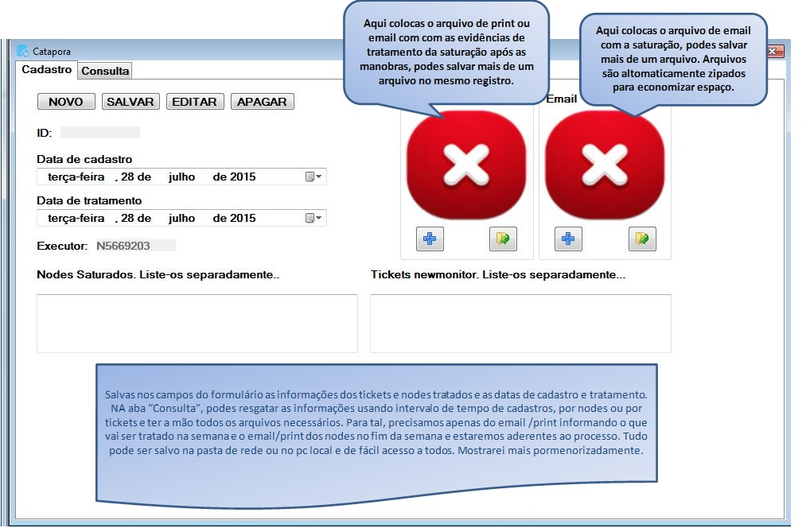
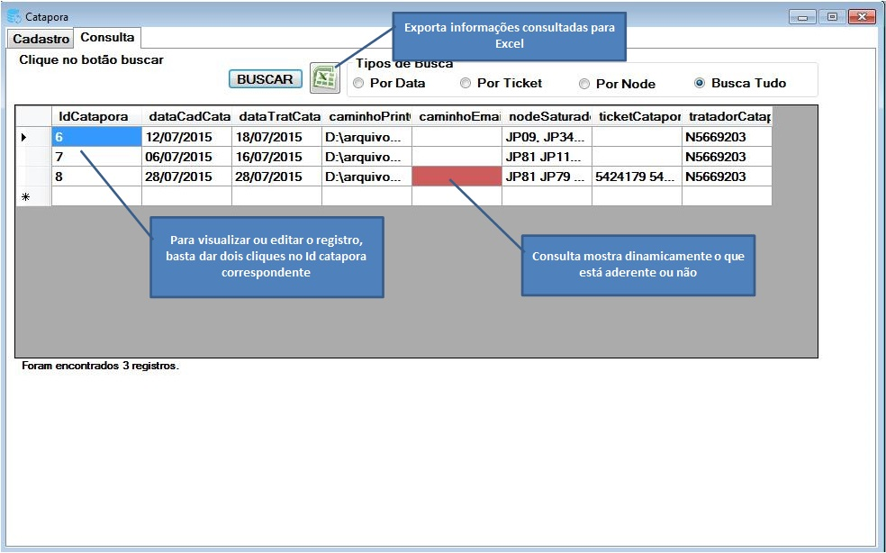
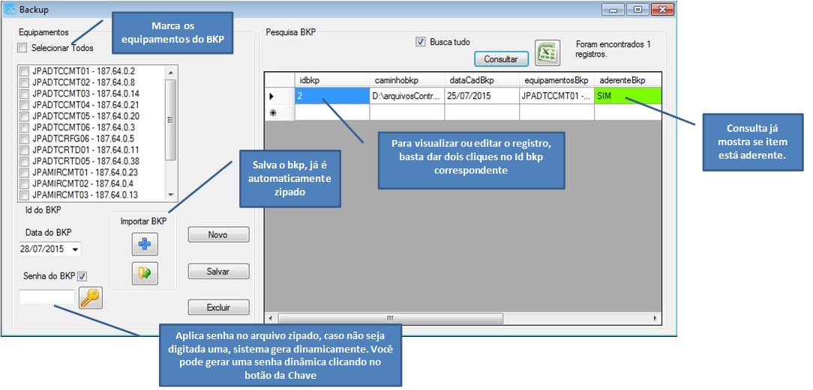
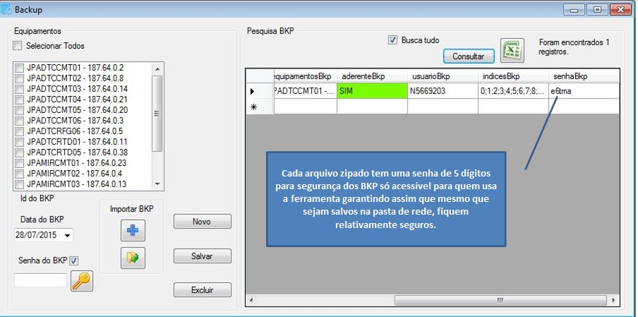
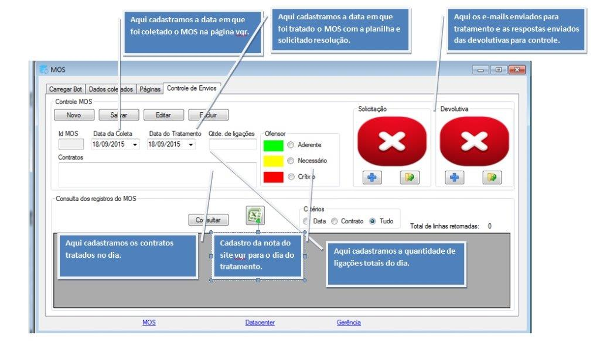
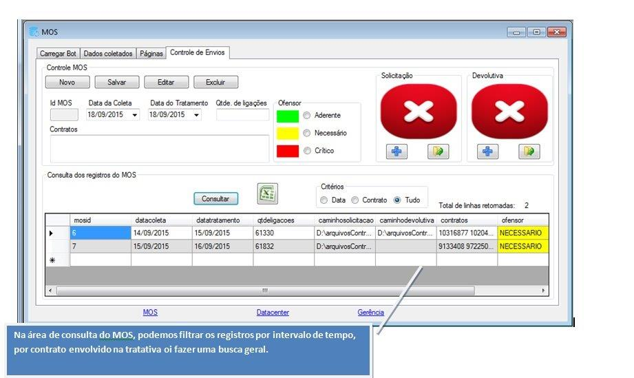

Central de ajuda do aplicativo
Aqui você selecionará a pasta em que o sistema salvará todos os arquivos por padrão. Esta pasta pode ser mudada, mas os arquivos antigos não irão ser movidos para a nova pasta. Guarde o caminho da pasta antigo!

Aqui você salvará os controles do catapora, serve para comparação e sinalização, além de facilitar a busca aos processos de maneira geral. Verifica se o processo está aderente.


No formulário de Backup, é possível salvar o mesmo com os equipamentos que foram salvos, por senha para manter o arquivo zipado gerado mais seguro e verificar se o processo foi aderente.


No formulário de controle do MOS, é possível salvar os registros diários com os emails enviados para fácil controle.


Desenvolvido por Valdemir Bezerra para o DTC NET JPA. Contato: (83)9171-2024 / valdemir.junior2@netservicos.com.br / N5669203